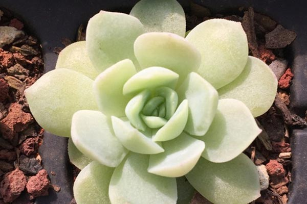
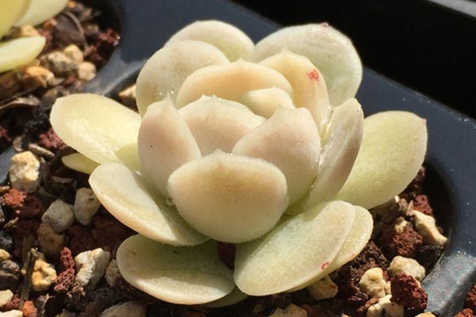

有些多肉品种的名字你根本叫不出来，因为它们是杂出来的，你可能没想到有多少多肉爱好者在多肉杂交这件事上的兴趣有多浓厚，譬如下文的肉山丨大魔王，杂交了许多多肉，回首移苗，不堪痛苦，尤爱拿月影杂交，因为杂出后的后代往往可以靠颜值取胜。多肉植物的杂交，并不是说A和B杂交出了性状不大一样的多肉就叫新品种，新品种还需要几代考验性状的稳定性和可遗传性，新品种名的确定和普及过程也是缓慢的，所以现在市面上许多新的多肉的名字，有些不仅没有拉丁文学名，甚至有了拉丁文名，网上还未必能搜到。多肉的“新品种”有多少，看看下文的多肉图片就可窥一斑了。
本文多肉杂的名字只是代号，是为了方便自己的记忆和交流，不是严谨的成熟的新品种，之前天真的用了新品种这种词，被大神科普了一个月，所以先说一句防喷。
“即使2个人用同样的品种在不同的地点杂交出来的后代，都不能算作一个东西”大神如是说，所以公布父母本的图片仅作参看，不能作为完全依据，大家看看就行。
关于杂交，一代选育，二代定纯，三代验证，每年你都能赶上有开花株也需要寒暑三载，所以要科学的定一个品种，是需要时间了，经济社会，都是赚快钱的，也包括我在内，少了以前爱花的那种心态，看到的都是利润，希望有更多的花友能真的用时间来熬出好的品种和优选出更漂亮的多肉。这个也许是多肉未来的趋势之一吧。
1.白月影x雪莲，1/10能带上红色叶尖。
2.玉杯x月影，冰边更大更明显，叶尖拉长，叶子更薄。
